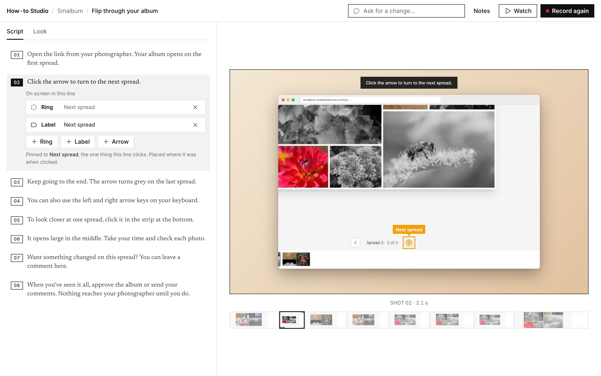
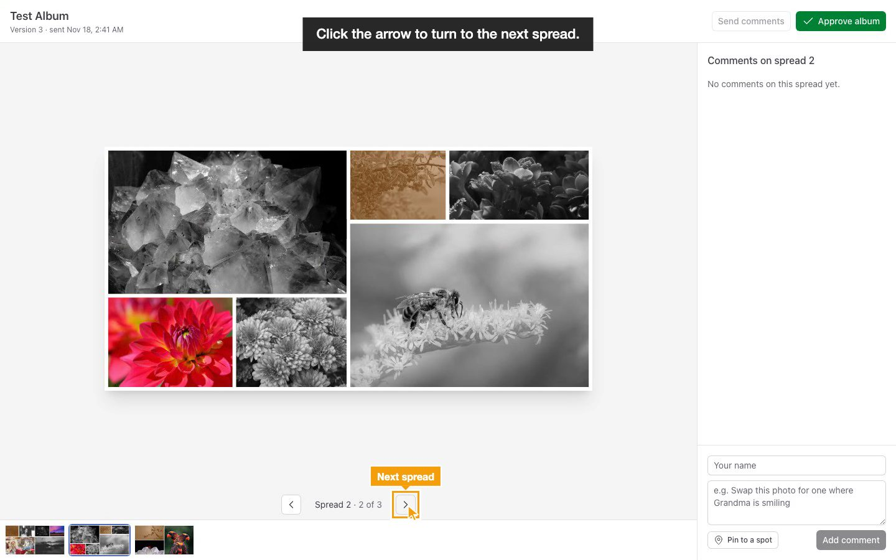
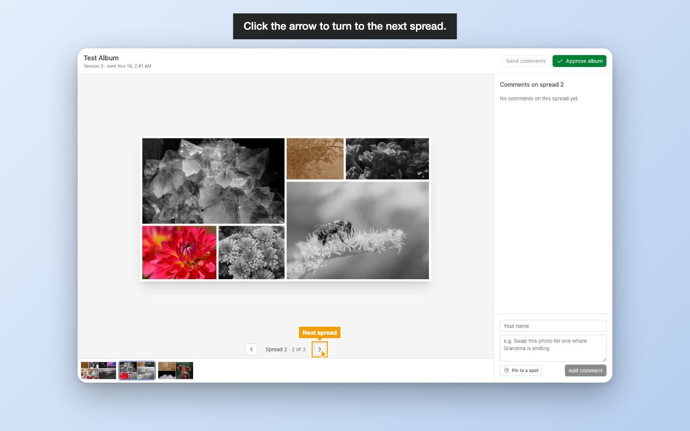
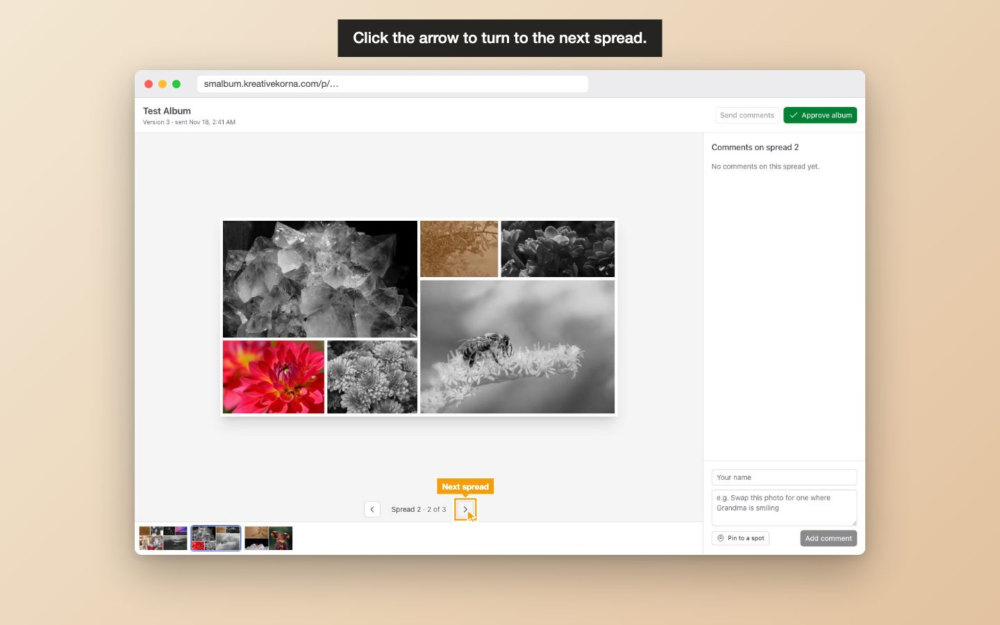
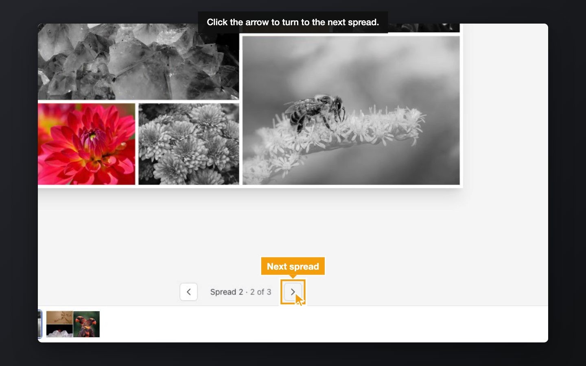

How-to videos of your app, made by an agent.
It reads your code, writes the script and films your live site with a voice, captions and a cursor. You just review.
.dmg for Apple silicon · runs on your machine with Claude Code · source on GitHub

What makes How-to Studio different.
Not a faster screen recorder. No recording by hand at all.
How-to Studio is a truly code-first how-to studio.
It's for teams who would rather not record tutorials by hand. Useful if you keep a help centre current, onboard new users, or ship features every week.
Apps like Tella and Screen Studio are great when you want to record and edit yourself. How-to Studio is for people who want an agent to read the code and film it.
What reading the code gets you →A video is a script.
One line per step. Each line holds for as long as its voice.
-
1
Connect
Give it the folder with your code and your site's address. It lists every save in the code and marks the ones that can't be undone.
-
2
Script
Say what the video should show. It writes the lines in the words on your screen. Edit any line, or ask for a change in plain words.
-
3
Record
It films your live site in a real browser. Saves are answered inside that browser, so your real data stays as it was.
-
4
Review
Watch it with the script beside it. Change the look, or pin a ring or label to a button, and make it again in seconds.
It reads your code before it touches your app.
A recorder only sees pixels. How-to Studio sees what each button does, so it can film the whole task, last click included.
-
Knows what can't be undone
Approve, delete and send are found in the code first. On camera the click is shown and nothing happens.
-
Keeps your real data as it was
Every save to your live site is blocked or answered in the browser. A take that tries to write is refused.
-
Uses your words
The voice says “Next spread” because the button does. Lines are written for people who aren't technical.
-
Leaves out test leftovers
Old test comments and records can be kept out of the shot, so viewers see a clean app.
Change the look. Don't film again.
The page is filmed clean. Captions, the cursor, marks on buttons and the frame are drawn afterwards, so a new look takes about seven seconds.

Full · the page fills the video

Framed · on a background

Browser · with the site's address

Zoom on the click · pushes in on each click
Run it on your Mac.
It runs on your machine. Claude Code, which you sign in to yourself, reads the code. The voice is made locally, and videos stay in a folder on your Mac.
.dmg · for Macs with Apple silicon
Also needs Claude Code, Node 22+, Python 3 and ffmpeg, plus the voice setup in skill/SKILL.md. Early: tested end to end on one app so far.
Build it from source on GitHub →